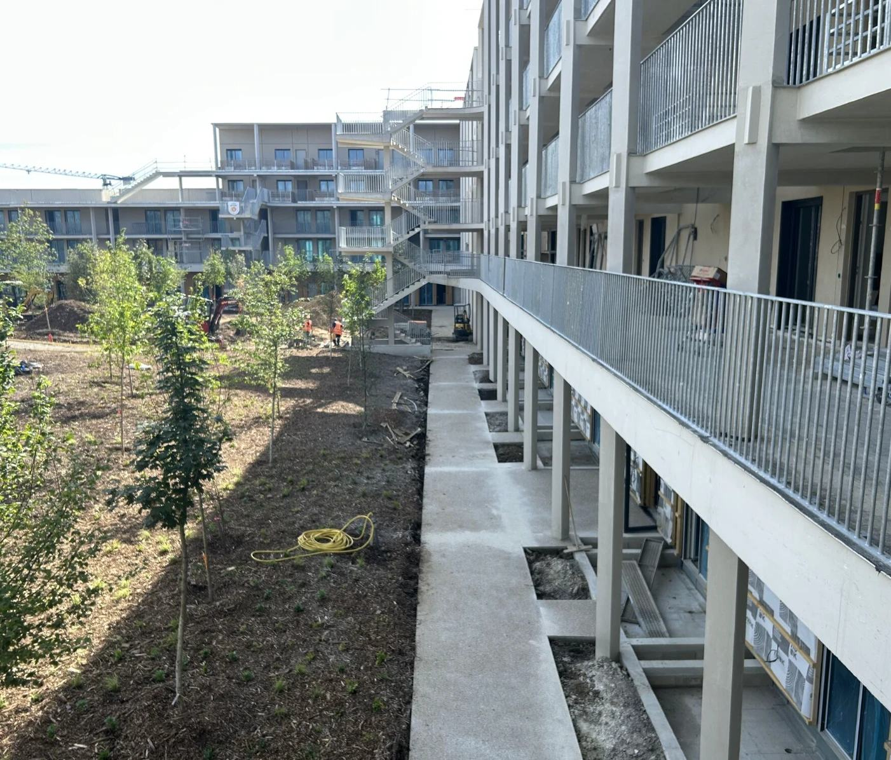
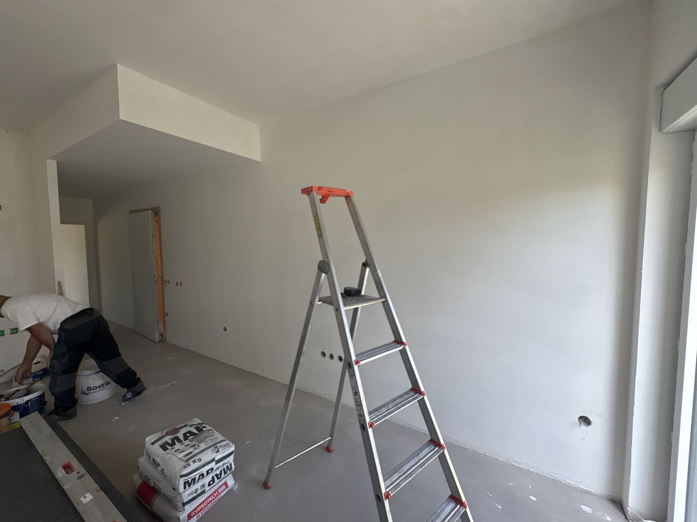
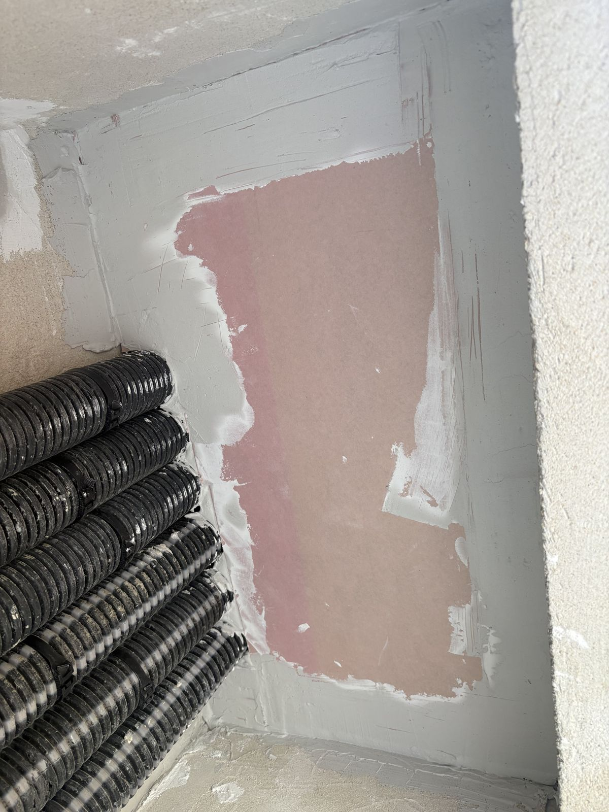
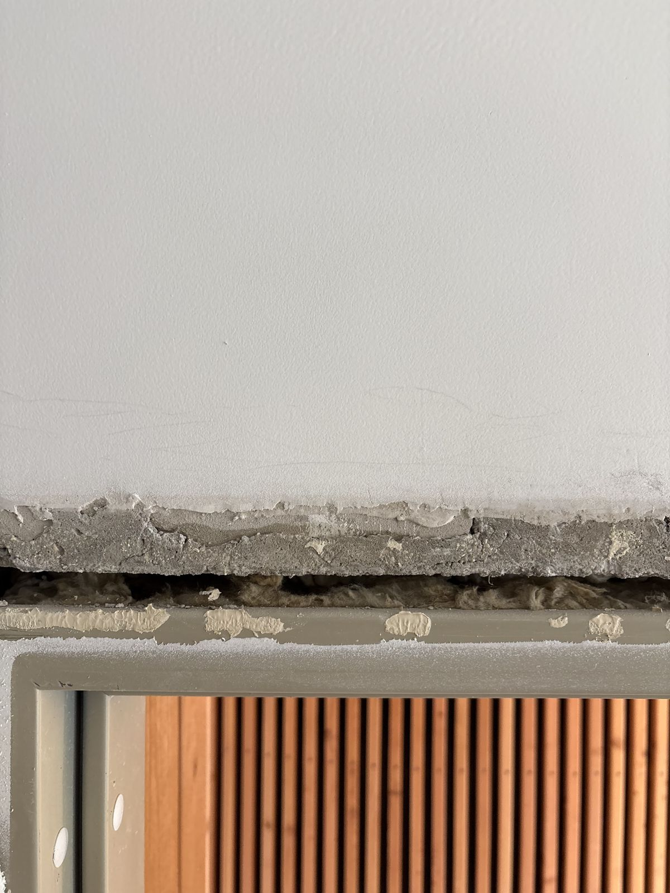
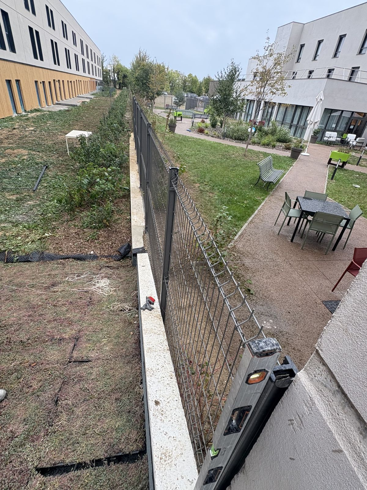
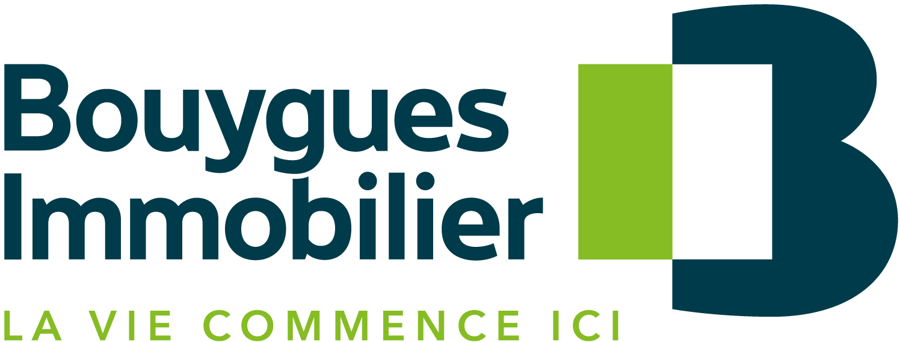

Pour les promoteurs immobiliers et les bailleurs · Toute l’Île-de-France
Corvoyage et visites de livraison : livrez sereinement.
Entre la fin du chantier et la remise des clés, tout se joue vite : les logements doivent être prêts, les réserves levées, les acquéreurs et les locataires accompagnés. OF ENTRETIENS prend en charge cette dernière ligne droite — corvoyage, visites, accompagnement à la livraison, levée de réserves et travaux tous corps d’état — pour les promoteurs comme pour les bailleurs, avec un interlocuteur unique qui connaît votre opération.

Ce qui se joue à la livraison
Une date ferme, des réserves, et des acquéreurs qui attendent.
Nous connaissons la réalité d’une fin d’opération : la pression du planning, les corps d’état déjà repartis sur d’autres chantiers, et chaque réserve non levée qui retarde une remise de clés.
Vos contraintes
- La date de livraison ne bouge pas. Les acquéreurs sont convoqués, les actes sont signés : tout doit être prêt à temps.
- Les réserves s’accumulent. Visites de pré-livraison, livraison, et chaque logement apporte sa liste de reprises à traiter.
- Les entreprises sont reparties. Faire revenir un corps d’état pour une retouche coûte cher et prend du temps.
- Chaque détail compte. Un acquéreur reçoit son logement une fois : l’état dans lequel il le découvre fait toute la différence.
Ce que nous prenons en charge
- Corvoyage : préparation des logements avant livraison, levée de réserves TCE, prise de rendez-vous client par une personne dédiée, transmission des quitus et reportage photos.
- Visites et accompagnement à la livraison : visites cloisons, de pré-livraison et de livraison pour les promoteurs comme pour les bailleurs, présence le jour de la remise des clés.
- Levée de réserves : du constat à la reprise, jusqu’au contrôle final.
- Travaux tous corps d’état, y compris en limite de prestation : plâtrerie, menuiseries intérieures et extérieures, sols durs et souples, peinture, serrurerie, gros œuvre, plomberie, électricité, carottage — une seule équipe, sans faire revenir chaque entreprise.
- SAV et GPA en lieu et place de vos équipes : suivi des réserves (pré-livraison, livraison, J+30, GPA), pointage sur logiciel ou Excel, coordination MO, MOEX, OPC, entreprises, bailleurs et syndics, accompagnement lors des expertises.
- Travaux liés aux réseaux ENEDIS : carottages et traitement coupe-feu de gaines techniques, réalisés en coordination avec le chantier.
- Nettoyage de façade et base-vie : un chantier propre pendant l’opération, un bâtiment net à la livraison.
- Démarches liées aux demandes de mairie, prises en charge pour votre compte.
Un imprévu bloquait l’avancement d’un chantier : notre équipe s’est mobilisée en délai court pour réaliser 5 carottages, poser un panneau de doublage avec bandes, rectifier un seuil d’ascenseur et traiter le coupe-feu de plusieurs gaines. Le chantier a pu continuer d’avancer dans de bonnes conditions.
Le parcours de livraison
De la visite cloisons à la remise des clés.
Nous accompagnons chaque étape du parcours acquéreur et locataire, pour les promoteurs comme pour les bailleurs.
Visite cloisons. Au stade du cloisonnement, nous accompagnons la visite du logement : vérifier les implantations pendant qu’il est encore temps d’ajuster.
Visite de pré-livraison. Passage en revue complet du logement, constat des réserves et organisation des reprises avant le jour J.
Livraison. Présence le jour de la remise des clés aux acquéreurs ou aux locataires, pour une livraison dans de bonnes conditions.
Après la livraison. SAV et GPA en lieu et place de vos équipes : suivi des réserves à J+30 et pendant la garantie de parfait achèvement, pointage régulier, coordination des intervenants, jusqu’au dernier quitus.
Notre méthode
Opération par opération, jusqu’au dernier quitus.
Nous visitons l’opération et nous écoutons vos enjeux. Planning, état des logements, points sensibles : le périmètre se définit sur place.
Nous cadrons l’intervention logement par logement. Ce qui est repris, dans quel ordre, pour quelle échéance.
Nous intervenons avec une équipe polyvalente. Tous corps d’état maîtrisés : une reprise ne reste pas en attente d’un sous-traitant.
Nous suivons chaque réserve jusqu’à sa levée. Vous savez à tout moment où en est votre opération.
Nous disons les choses. Un point bloquant est signalé tout de suite, avec une proposition pour le traiter.
Sur le terrain
Nos interventions, en vrai.
Des photos prises sur nos chantiers, sans mise en scène.





Promoteur immobilier — nous intervenons actuellement sur le programme « Un Balcon en Forêt » (SCCV), en Île-de-France.
Questions fréquentes
Promoteurs et bailleurs : vos questions, nos réponses.
Qu’est-ce que le corvoyage ?
Le corvoyage consiste à préparer et suivre les logements d’une opération avant leur livraison : contrôle de l’état, reprises de finitions, suivi de chaque réserve jusqu’à sa levée. Il permet au promoteur de livrer à la date prévue, dans de bonnes conditions, sans faire revenir chaque corps d’état.
Prenez-vous en charge la levée de réserves après la réception ?
Oui. Nous traitons les réserves constatées lors des visites de réception, du constat à la reprise jusqu’au contrôle final, avec une équipe qui maîtrise l’ensemble des corps d’état : maçonnerie, plâtrerie, serrurerie, carottage.
Faites-vous les visites pour les promoteurs et les bailleurs ?
Oui. Nous réalisons les visites cloisons, les visites de pré-livraison et les visites de livraison pour les promoteurs immobiliers comme pour les bailleurs, et nous sommes présents le jour de la remise des clés aux acquéreurs ou aux locataires.
Pouvez-vous intervenir en urgence sur un chantier, par exemple pour des travaux liés à ENEDIS ?
Oui. Exemple récent : mobilisation en délai court pour 5 carottages, la pose d’un panneau de doublage avec bandes, la rectification d’un seuil d’ascenseur et le traitement coupe-feu de plusieurs gaines, sur un chantier lié aux réseaux ENEDIS.
Assurez-vous le SAV et le suivi pendant la GPA ?
Oui, en lieu et place de vos équipes : suivi des réserves en pré-livraison, à la livraison, à J+30 et pendant la GPA, pointage régulier sur logiciel ou sur Excel, coordination des interventions avec la MO, la MOEX, l’OPC, les entreprises, les clients, les bailleurs et les syndics, prise de rendez-vous par une personne dédiée et accompagnement lors des expertises.
Prenez-vous en charge les démarches auprès des mairies ?
Oui, nous prenons en charge les démarches liées aux demandes de mairie pour le compte des promoteurs, dans le cadre de leurs opérations.
Dans quelles zones intervenez-vous ?
Partout en Île-de-France : Paris (75), Seine-et-Marne (77), Yvelines (78), Essonne (91), Hauts-de-Seine (92), Seine-Saint-Denis (93), Val-de-Marne (94) et Val-d’Oise (95). Notre bureau est à Courtry (77).
Contact
Parlons de votre opération.
Décrivez-nous votre programme et son calendrier : nous venons voir sur place avant de chiffrer quoi que ce soit.
- Téléphone06 62 06 93 22
- E-mailmike.ofentretiens@gmail.com
- BureauCourtry (Seine-et-Marne) — interventions dans toute l’Île-de-France
- Instagram @ofentretiens — suivez nos interventions